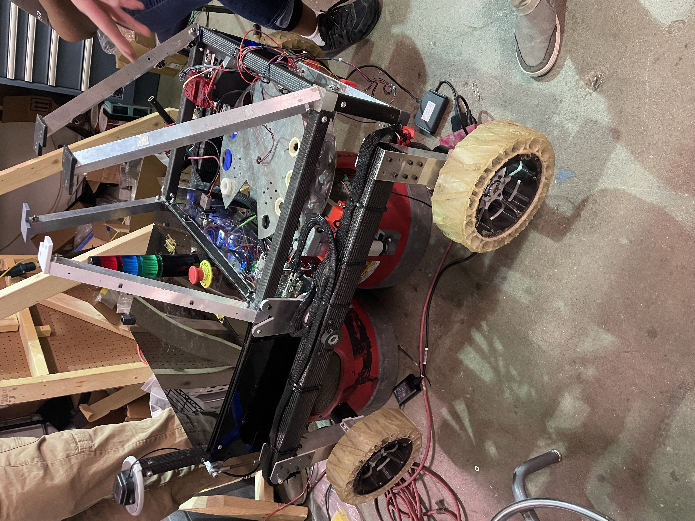
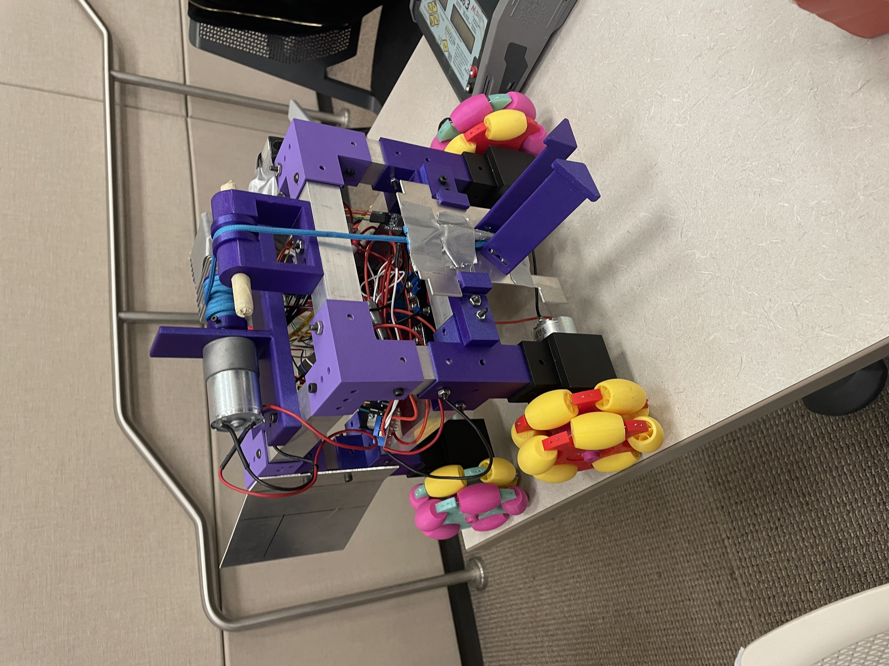

RoboNav Robot

Role: Project Manager, Mini Rover Challenge / Mechanical Science Member | Organization: RoboJackets, Georgia Tech
Duration: August 2024 — Present
Project Overview
Contributed to RoboJackets robotics projects involving autonomous navigation, mechanical design, manufacturing, and system integration. As project manager for the Mini Rover Challenge, I coordinated a six-month development effort for new members while contributing to the rover's mechanical and science systems.
System Architecture
- Platform: Autonomous rover for mission-based navigation
- Mechanical systems: Rover components designed for team integration and field use
- Manufacturing: Additive manufacturing, waterjet cutting, and laser cutting
- System scope: Mechanical, science, and software subsystems
My Contributions
Project Leadership
- Managed a six-month rover development project for new members.
- Coordinated training, project scheduling, and technical milestones across the team.
- Mentored and onboarded new members while supporting team operations.
Mechanical Design & Manufacturing
- Designed rover components in SolidWorks for integration with the broader vehicle.
- Manufactured parts using additive manufacturing, waterjet cutting, and laser cutting.
- Iterated designs based on fit, function, and the needs of the autonomous mission.
Subsystem Integration
- Collaborated with multidisciplinary teams to integrate mechanical and science subsystems.
- Supported technical development for autonomous mission execution.
- Contributed to robotics projects spanning mechanical design, software, controls, and systems integration.
Skills & Tools
SolidWorks, mechanical design, robotics, autonomous systems, system integration, 3D printing, waterjet cutting, laser cutting.
Gallery & Files

